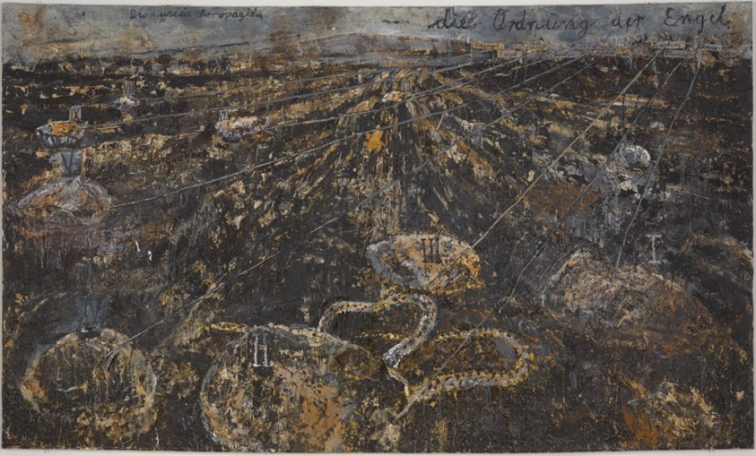

The Order of the Angels (Die Ordnung der Engel)
Anselm Kiefer · 1983/84 · Oil, emulsion, shellac, straw, and lead on canvas · 330 × 555 cm · Art Institute of Chicago
In copyright. Look and learn: shown for study, not for download.
The canvas is 3.3 metres high and 5.55 metres wide, and Kiefer worked on it with oil, emulsion, shellac, straw and lead. His attraction to lead began when he had to repair aging pipes in the first house he owned. He was in his late thirties when he made it.